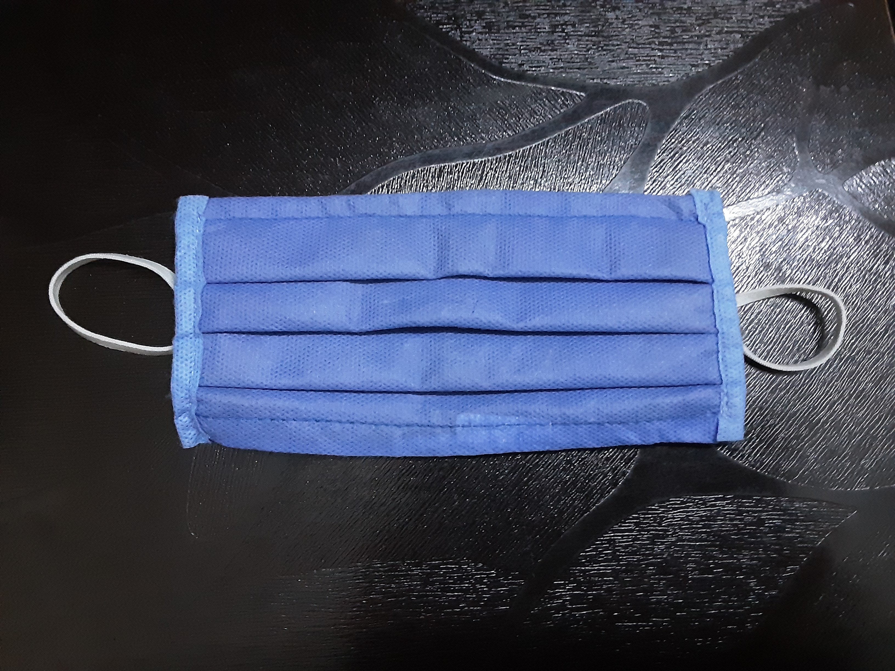

Output on Mobilenet Model -
cellular telephone, cellular phone, cellphone, cell, mobile phone
Result -
Mobile net is more accurate
Test Image - 
Output on Wolfram Project -
Cup
Output on Mobilenet Model -
Purse
Result -
Both are not accurate
Test Image -
Output on Wolfram Project -
Lens cap
Output on Mobilenet Model -
Stethoscope
Result -
Mobile net is more accurate
I have tested 4 images Mobilenet have predicted 2 images. And Wolfram Project have predicted 0 images.
So according to my case study Mobilenet is more accurate